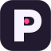
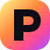

PALRAMAI
Thin stroke letter + dashed ring. Reads as a sketch, not a brand. Weak at 16px and easy to confuse with a loading spinner.
The current logo is an outlined P in a ring. These are separate directions, not colour tweaks. Reply with the number — 01 to 06 — and that mark becomes the site, favicon and lockup.
Thin stroke letter + dashed ring. Reads as a sketch, not a brand. Weak at 16px and easy to confuse with a loading spinner.

A solid P, not an outline. The counter holds a pink peak — the A, the build, the signal. Works as a favicon because the silhouette is a letter, not a ring.

App-icon language. A rounded square, a heavy P, one live pink core. Looks finished next to Slack, Linear, Notion. Best if you want PALRAM to feel like a product, not a diagram.

The site’s yellow–orange–pink–purple in one tile, with a dark P cut out of it. Loudest option. Strong on social, tabs and mobile. Use if the colour field on the site should also live in the mark.

Same P, rebuilt with weight and one pink node instead of a full orbit. Quiet, expensive, still about a live system. Closest cousin to the current idea, without looking unfinished.

Three rising bars. Agent, automation, product — stacked. Abstracts away the letter so the brand is a system. Distinct in a grid of AI companies that all use a P or a spark.

P and A drawn as one letter. The pink bar is the only colour. Feels like a law firm or an architecture studio that also ships software — serious, ownable, hard to copy with a generic icon pack.